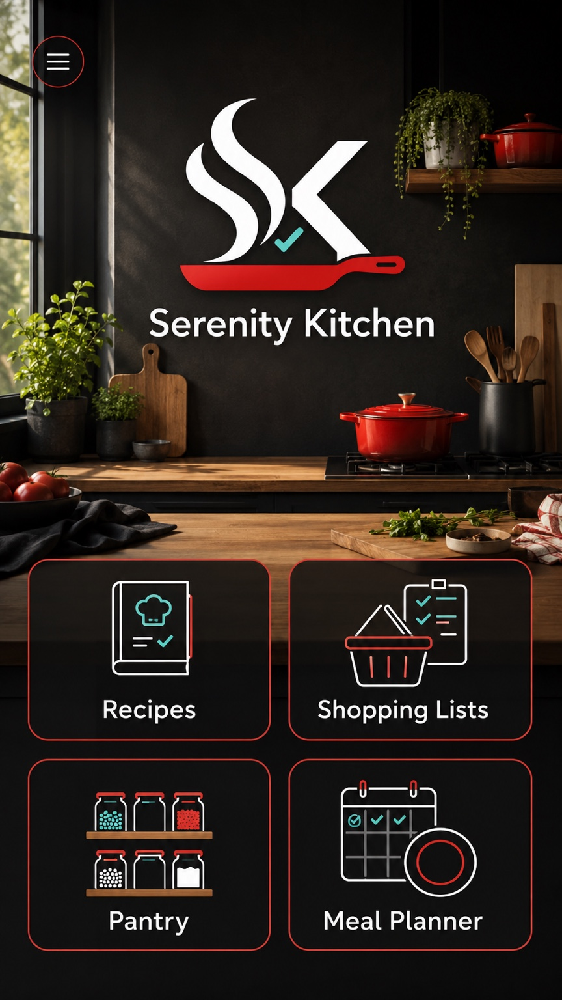

All recipes
Browse every enabled module.
No recipes found
Try a different search, category, or module.
Recipe modules
Import, enable, disable, export, or uninstall recipe collections.
Shopping list
Organize purchases by store and aisle.
Pantry
Track what is on hand and restock automatically.
Meal planner
Plan one week at a time.